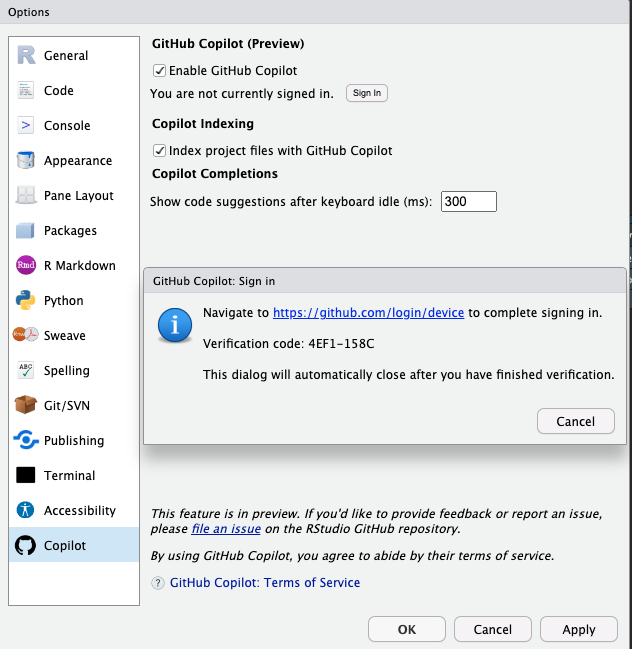

Over wat Copilot is
Afgelopen week heb ik wat geëxperimenteerd met Github Copilot. Tegelijkertijd heb ik Michael D. Callaghans boek PAIR Programming. How AI tools like GitHub Copilot and ChatGPT Can Radically Transform Your Development Work gelezen(Callaghan, M.D. 2023) en Thomas Mocks video gekeken hier.
Github Copilot is een tool die je helpt om code sneller en met minder moeite te schrijven. De tool is onlangs binnen RStudio opgenomen. De tool wordt aangedreven door OpenAI Codex, een nieuw AI-systeem dat is gemaakt door OpenAI. Copilot is een tool die je helpt om code sneller en met minder moeite te schrijven. Hier vind je er informatie over en dat zet ik nog eens op rij.
Wat nodig is
Om Github Copilot te gebruiken, heb je een Github-account nodig. Je kunt je aanmelden voor Copilot voor individuen of teams. Je kunt je ook aanmelden voor Copilot voor organisaties. Om Github Copilot in RStudio te gebruiken, heb je RStudio versie 2023.09.0 of later nodig. Je kunt de laatste versie van RStudio downloaden van de RStudio website.Om GitHub Copilot te gebruiken moet je toegang tot internet hebben.
Installatie
Om GitHub Copilot in RStudio in te schakelen,
1. Ga naar Tools > Global Options > Code > Completion.
2. Vink het vakje aan naast “Gebruik GitHub Copilot voor code voltooiing”.
3. Download en installeer de Copilot Agent componenten.
4. Klik op de Sign in with-GitHub knop om in te loggen op je GitHub account.
5. In het Github copilot: sign in dialoogvenster, kopieer je de verificatiecode

- Navigeer naar of klik op de link naar https://github.com/login/device, plak de verificatiecode erin en klik op “Doorgaan”.
- GitHub zal de benodigde permissies voor GitHub Copilot aanvragen. Om deze rechten goed te keuren, klik je op “Autoriseer GitHub Copilot Plugin”.
- Nadat de rechten zijn goedgekeurd, zal jouw RStudio IDE toegang verschaffen.
- Sluit het Global Options dialoogvenster, open een bronbestand (.R, .py, .qmd, etc) en begin te coderen met Copilot!
Om GitHub Copilot uit te schakelen:
- Navigeer naar Tools > Global Options > Copilot en vink “Enable GitHub Copilot” uit, of.
- Gebruik het Command Palette Cmd+Shift+P op Mac of Ctrl+Shift+P op Windows/Linux, zoek naar “Enable GitHub Copilot” en vink dan “Enable GitHub Copilot” uit.
Wat heb ik gedaan
Nadat ik Copilot succesvol had geïnstalleerd, ben ik er wat mee gaan experimenteren. De laatste weken was ik betrokken bij een introductie cursus R NSCR-R Data Carpentry Workshop. Het waren drie cursusdagen. De eerste dag werd gewerkt met het programma OpenRefine, een programma om data op te schonen en te transformeren. De andere twee dagen waren introductiedagen om met het programma R te leren werken (mn basis en met tidyverse). Ik heb de lijn van deze dagen gevolgd en ben aan de slag gegaan met de data die gebruikt en heb de verschillende handelingen in tekst omschreven. Copilot werkt zo dat als je omschreven hebt wat je wilt doen, de syntax vanzelf verschijnt. De tekst en de codes gezamenlijk vind je in dit document SafTot.R. Hetzelfde document heb ik ook opgeschoond SafTot_clean. In dat laatste document vind je enkel de omschrijvingen. Ga over deze omschrijvingen heen en eronder verschijnt ‘ghost text’ de suggestie die Copilot jou geeft. Soms pakt Copilot niet meteen de code. Vaak helpt het om een logische letter in te tikken. Door de tab-vooruit knop in te drukken wordt deze code geaccepteerd.
Conclusie
Voor mij waren dit de eerste dagen dat ik copilot gebruikte. Ik had geen idee hoe ik het zou vinden. Ik was een beetje sceptisch, moet ik toegeven. Maar ik moet zeggen, dit systeem werkt heel goed als:
- je je taak stap voor stap uitvoert;
- eenvoudig formuleert;
- als je doorkrijgt hoe het gereedschap werkt en je steeds beter weet welke vragen je moet stellen;
- als je gewend bent aan het spookschrijven;
- je niet blindelings volgt, maar zelf de leiding neemt.
De tool maak ik mij de volgende maanden eigen en zal deel uitmaken van mijn werkwijze.
Alle documenten vind je ook hier op GitHub